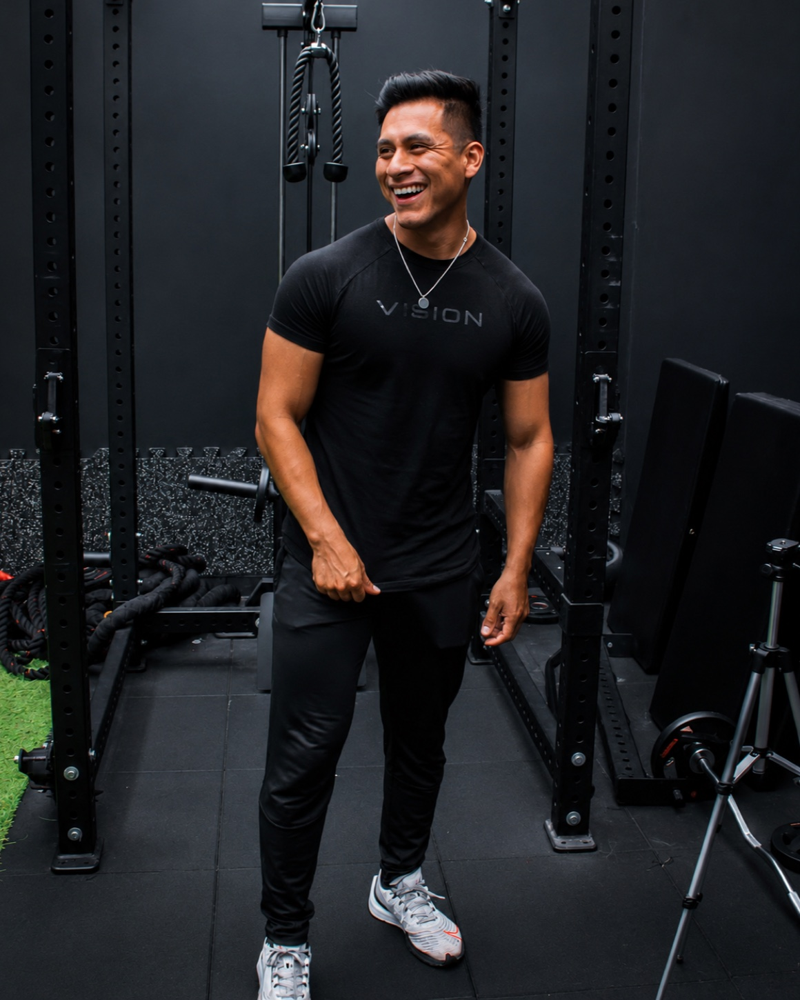
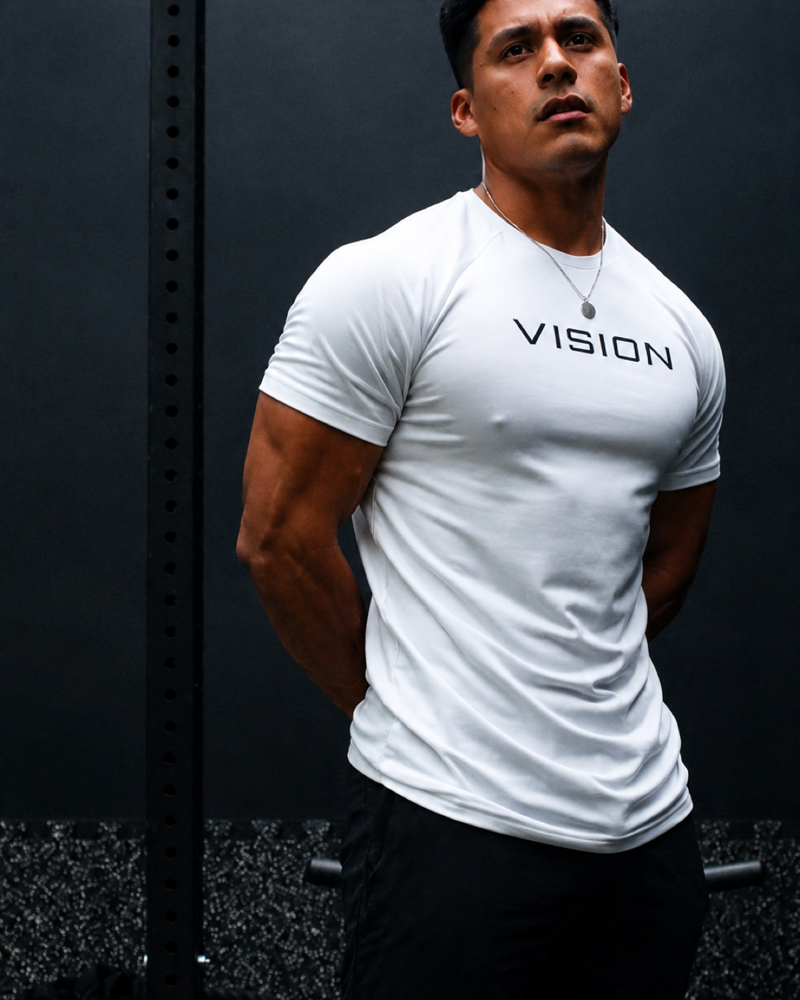
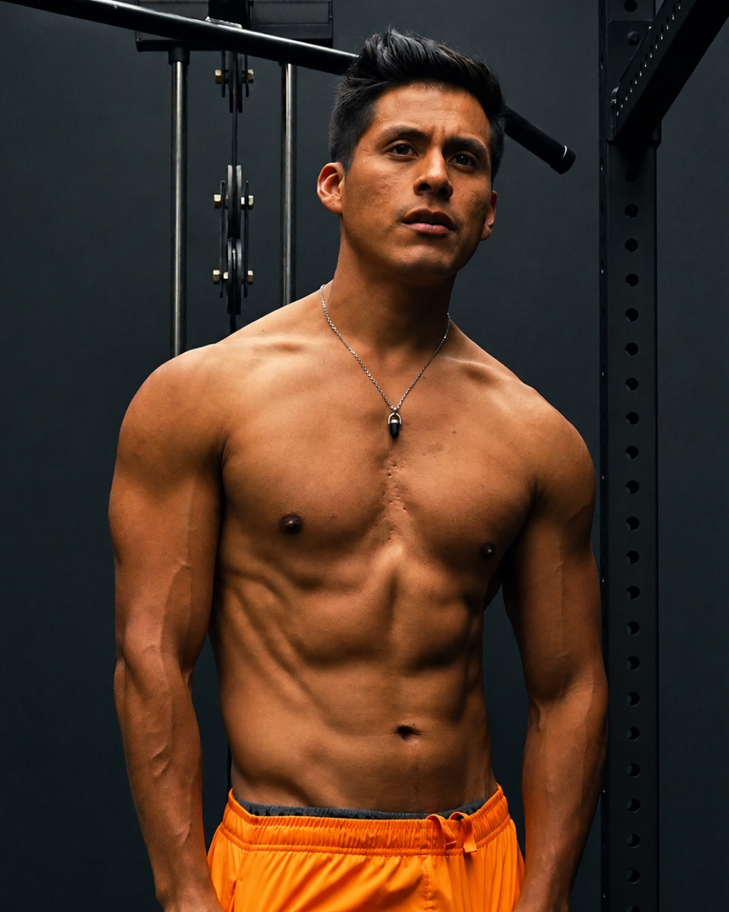
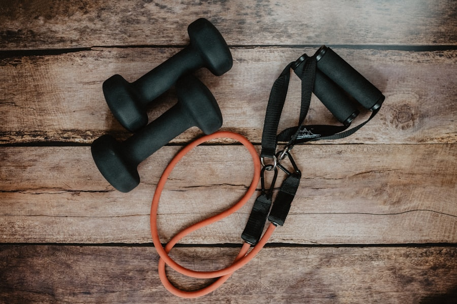
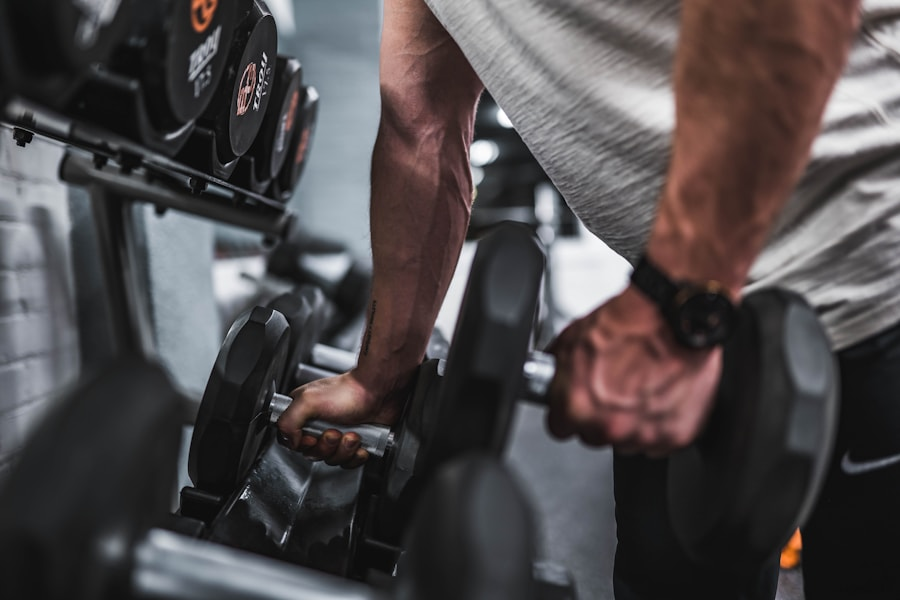
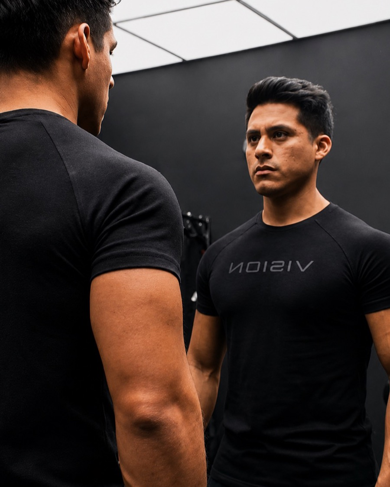
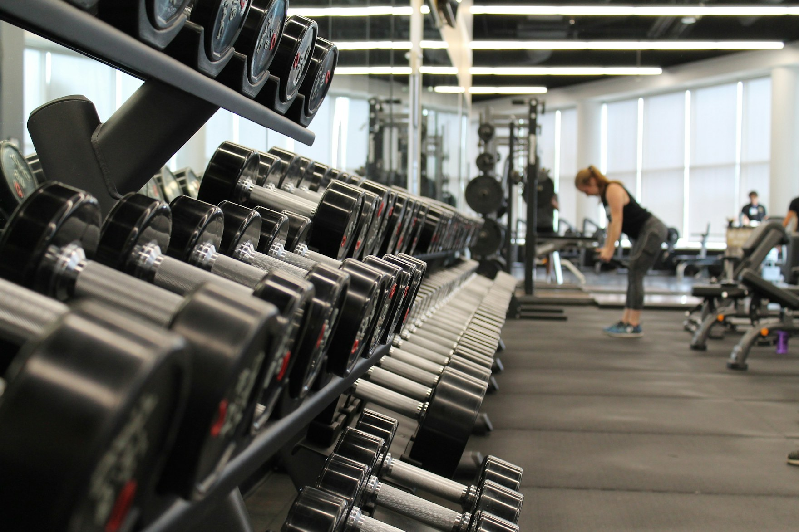
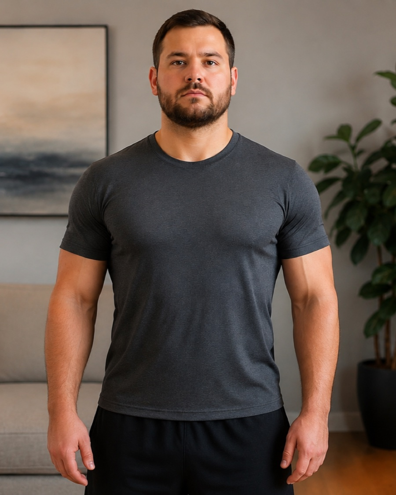
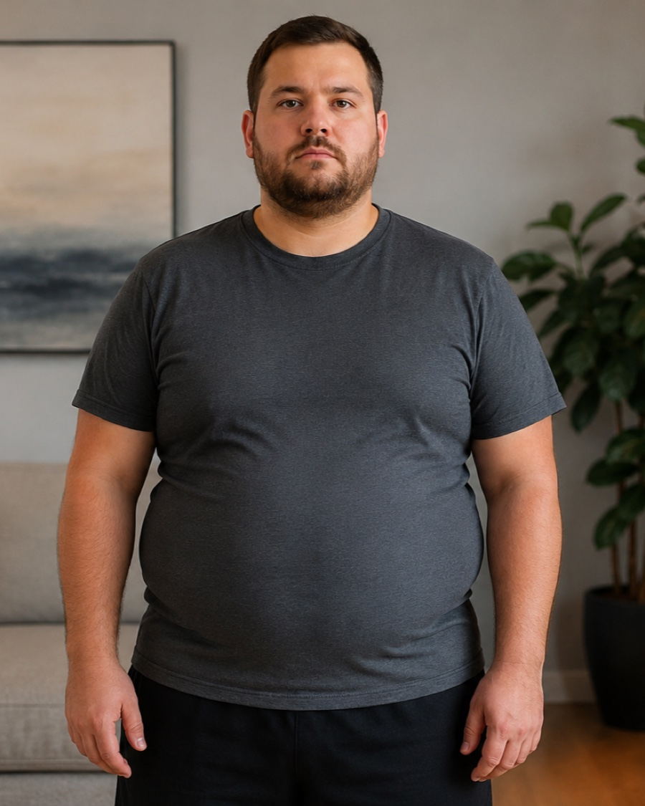

Evaluamos
Tu composición, tus hábitos, tu horario y tu objetivo real. Nada se programa hasta entenderlo.
Coach de pérdida de grasa · Lima, Perú
Ayudo a hombres +30 a perder grasa sin vivir en el gimnasio — y a construir un físico atlético que puedan mantener.

La mayoría no quiere un físico enorme. Quiere volver a sentirse bien.

No creo en dietas de castigo ni en rutinas imposibles. Creo en un método que encaje con tu trabajo, tu familia y tu vida — para siempre.
La meta no es un físico de portada. Es sentirte fuerte, ligero y con energía.
Y, sobre todo, no volver a perderlo. Lo que no puedes sostener, no cuenta.
Tu composición, tus hábitos, tu horario y tu objetivo real. Nada se programa hasta entenderlo.
Sesiones pensadas para tu tiempo, no para tu agotamiento.
Nutrición flexible que encaja con tu vida — sin prohibiciones absurdas.
Hábitos que se quedan para siempre, no una dieta más.

Sobre Jose
Lima, Perú · Entrenando desde 2013
Soy coach online de pérdida de grasa, desde Lima, Perú. Entreno desde 2013 y llevo años ayudando a hombres +30 a recuperar su forma sin poner su vida en pausa — porque lo que no puedes sostener, no sirve.
La mayoría no quiere un físico enorme. Quiere volver a sentirse bien: fuerte, ligero, con energía. Ese es todo mi trabajo.
De ese niño de Lima al coach que soy hoy.
No te voy a prometer abdominales en 30 días. Te voy a enseñar a mantenerlos toda la vida.— Jose Aguirre
Probando, corrigiendo y acompañando a hombres reales con vidas ocupadas — hasta dar con un método que se sostiene.






“Volví a reconocermeen el espejo — y estavez no lo recuperé.”— Carlos, 41
Por aplicación — primero una llamada para ver si encajamos. Sin compromiso.
Reserva tu llamada gratis
15 minutos, sin compromiso — vemos si encajamos.
Abrir la agenda en una pestaña nuevaNo es obligatorio. Adapto el plan a lo que tengas — gimnasio, casa o poco equipo. Lo importante es que sea sostenible para ti.
Menos del que crees. Sesiones eficientes de 30–45 minutos que encajan con tu agenda.
Es justo para quien trabajo. El método se ajusta a tu edad, tu recuperación y tu punto de partida.
Tienes tu plan, seguimiento semanal y contacto directo conmigo. Ajustamos sobre la marcha.
El plan se adapta a tu vida real: viajes, hoteles, cenas fuera. Sin excusas, pero sin castigos.
Hablamos de tu situación y tu objetivo, y vemos si encajamos. Sin presión.
Reserva una llamada gratuita. Sin compromiso.